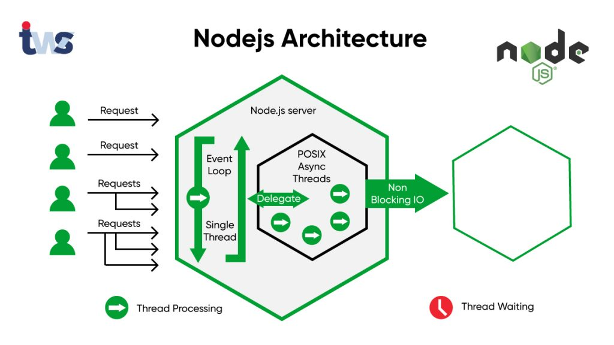

Node.js permite crear servidores eficientes con pocas líneas de código, eliminando la necesidad de configuraciones complejas. Su arquitectura basada en eventos lo hace ideal para manejar múltiples conexiones simultáneamente.
Casos de uso Desde blogs personales hasta portafolios y documentaciones técnicas, un servidor en Node.js para sitios estáticos es una opción rápida y moderna.